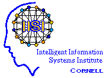
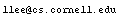

| Sponsored by the
Intelligent
Information Systems Institute
(a joint Cornell University/Air Force Research Laboratory organization) |
 |
Quick links: proceedings | program
committee | archives
Contact info: Lillian
Lee,  (Chair), or Donna Harman, donna.harman@nist.gov
(Co-chair)
SIGDAT, the Association for Computational Linguistics' special interest group on linguistic data and corpus-based approaches to NLP, held EMNLP 2001 in McConomy Auditorium in University Center, Carnegie Mellon University, Pittsburgh, PA USA on June 3 and 4, immediately preceding the meeting of the North American Chapter of the ACL (NAACL 2001). We had an exciting program devoted to advances in all areas of traditional interest to the SIGDAT and related fields, as well as to this year's theme, What Works and What Doesn't: Successes and Challenges.
Ted Pedersen's handouts:
PowerPoint
slides and accompanying
PDF paper
Eugene Charniak's slides:
forthcoming
Stefan Riezler's
slides: compressed
postscript
Joshua Goodman's
slides: powerpoint
David Evan's slides:
powerpoint
Lynette
Hirschman's slides: powerpoint
| Regina Barzilay, Columbia University | Marc Light, MITRE |
| Thorsten Brants, Xerox PARC | Dekang Lin, University of Alberta |
| Chris Brew, Ohio State University | Kim-Teng Lua, National University of Singapore |
| Eugene Charniak, Brown University | Lluís Màrquez, Technical University of Catalonia |
| Key-Sun Choi, KAIST | Diana McCarthy, University of Sussex |
| Kenneth Church, AT&T Labs-Research | Helen Meng, The Chinese University of Hong Kong |
| Stephen Clark, University of Edinburgh | Paola Merlo, University of Geneva |
| Michael Collins, AT&T Labs-Research | Rada Mihalcea, Southern Methodist University |
| Eric Gaussier, Xerox | Guenter Neumann, DFKI |
| Marti Hearst, UC Berkeley | Jian-Yun Nie, University of Montreal |
| Don Hindle, AnswerLogic | Franz Josef Och, RWTH Aachen |
| Changning Huang, Microsoft | Ted Pedersen, University of Minnesota, Duluth |
| Rebecca Hwa, University of Maryland | Roni Rosenfeld, Carnegie Mellon University |
| Hitoshi Iida, Sony | Anoop Sarkar, University of Pennsylvania |
| Paul Jacobs, AnswerLogic | Erik Tjong Kim Sang , University of Antwerp |
| Christian Jacquemin, LIMSI | Paola Velardi, University of Rome "La Sapienza" |
| Maghi King, University of Geneva | Atro Voutilainen, Conexor |
| Wessel Kraaij, TNO TPD | Kiri Wagstaff, Cornell University |
| Maria Lapata, Saarland University/University of Edinburgh | Roman Yangarber, New York University |
| Elizabeth Liddy, Syracuse University | Joe Zhou, Intel |
Quick links: start | proceedings | program committee | archives